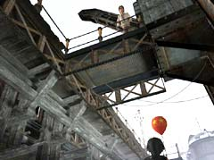

| 概要 | 地図 |
| 淡いヒント集 | ヒント集 | 的確なヒント集 |
| 攻略最短ルート |
| 場所選択に戻る |
ロマンスバーグ(前半)

まず、始めにやることはゼンマイを巻くことである。画像の右にある装置を動かせばよい。可動部分はハンドルとレバー。組み合わせは2通りしかないので、適当にやればよい。 無事にゼンマイが巻けたらば、オスカーに話しかけよう。 
石炭を入れる装置は、現在故障中である。原因を調べなくては、先に進めない。つまり、あなたが解決する問題の優先順位が変わるだろう。 今、やらねばならないことは下へ移動することだ。 
下へ続く門は鍵がかかっている。鍵を入手しなくてはならない。

あなたは気づいただろうか? 石炭を入れる装置の下で、一人の少女が意味もなく立っていることを。彼女の要求を聞いて、「カタラスキャンディー」をプレゼントすれば、きっと門の鍵は手に入る。 
キャンディーマシーンである。この三つのどれかがカタラスキャンディーである。どうすればよいだろうか? まず必要なのは、動かすためのコインである。 
コインを手に入れるための手段はエミリオフ大佐のいる店にある。カウンターの奥を調べよう。壊れたマシーンと「小さな鍵」が置いてある。この鍵がマシーン下のコインを入れる引き出しを開ける鍵なのだ。
| 次へ >> |
|
| 場所選択に戻る |
| 概要 | 地図 |
| 淡いヒント集 | ヒント集 | 的確なヒント集 |
| 攻略最短ルート |
Syberia II
| 目次へ戻る | ページの上部へ |